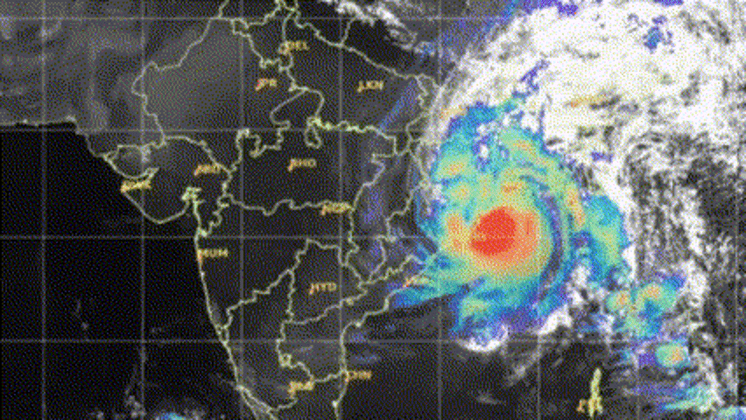
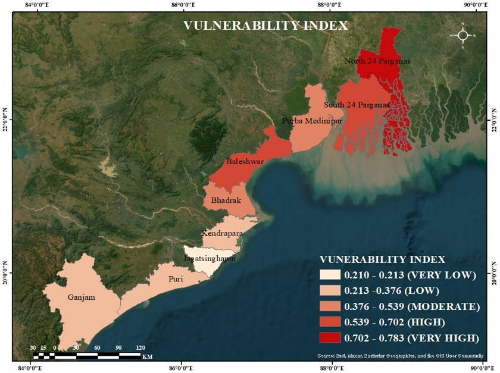

Coastal districts of West Bengal and Odisha frequently experience severe cyclonic storms originating from the Bay of Bengal, causing significant loss of life, infrastructure damage, and economic disruption. Districts including North 24 Parganas, South 24 Parganas, East Medinipur, Balasore, Bhadrak, Kendrapara, Jagatsinghpur, Puri, and Ganjam are particularly vulnerable because of their low elevation, long coastlines, dense population, and dependence on agriculture and coastal resources.
The present study focused on assessing cyclone-induced vulnerability of these coastal districts using an integrated AHP–TOPSIS Multi-Criteria Decision-Making approach. Several physical and socio-economic indicators were considered, including cyclone frequency, cyclone intensity, percentage of area below 5 m elevation, population density, annual rainfall, Human Development Index (HDI), non-working population, coastline length, land use/land cover (LULC), and mangrove cover.
The Analytical Hierarchy Process (AHP) was used to assign weights to the selected criteria, while TOPSIS was applied to rank districts according to their vulnerability levels. The combined approach provided a systematic framework for identifying areas with higher exposure and lower adaptive capacity to cyclone hazards.
The results identified North 24 Parganas as the most vulnerable district due to high cyclone frequency and intensity, low-lying terrain, dense population, and extensive agricultural land. South 24 Parganas ranked second because of its difficult deltaic topography, long coastline, frequent cyclone exposure, and relatively low socio-economic conditions. Balasore emerged as the third most vulnerable district because of higher cyclone occurrence, high rainfall, and dominance of cropland areas. East Medinipur ranked fourth, influenced by its long shoreline, high cyclone exposure, and comparatively low HDI.
Bhadrak, Puri, Ganjam, Kendrapara, and Jagatsinghpur also showed moderate to high vulnerability due to coastal exposure, agricultural dependency, dense settlements, and socio-economic limitations. Puri was particularly exposed because of its extensive coastline, while Ganjam showed increased risk associated with dense population and built-up areas.

The study demonstrates that both environmental and socio-economic factors strongly influence cyclone vulnerability in eastern coastal India. The AHP–TOPSIS framework effectively identified high-risk districts and can support disaster management planning, climate adaptation strategies, and coastal resilience development. The results emphasize the need for improved infrastructure, sustainable coastal management, and region-specific mitigation measures to reduce future cyclone impacts.